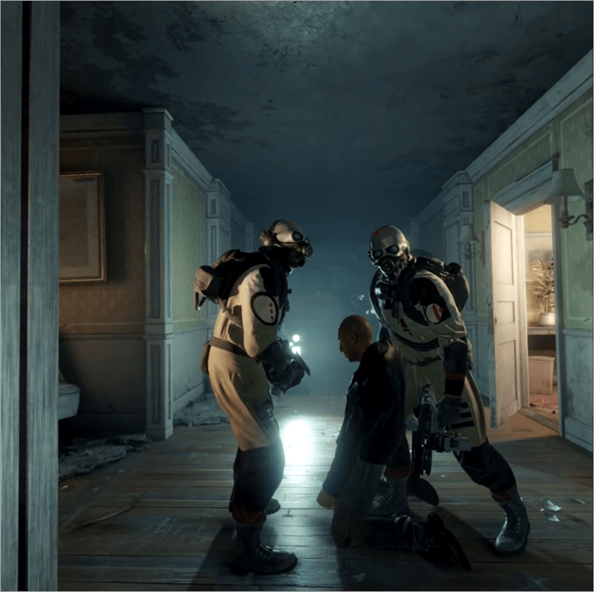
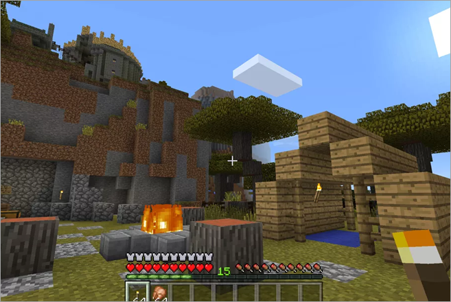
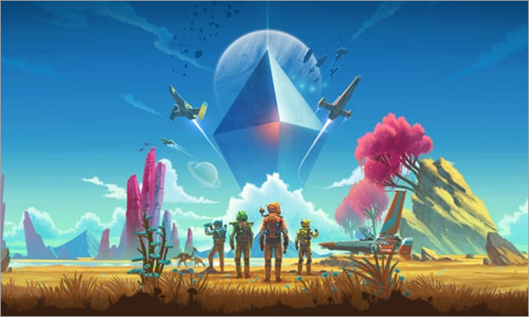
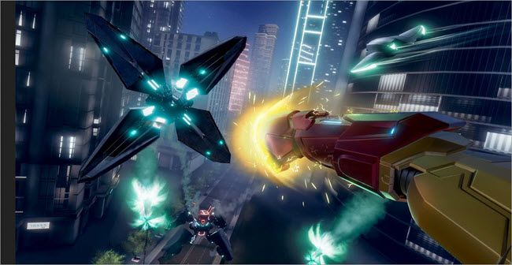
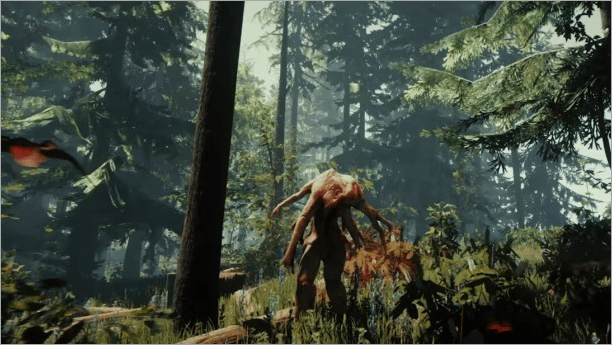

Računalne igre
| Half-Life: Alyx VR | Minecraft VR | No Man's Sky VR |
|---|---|---|
| Half-Life: Alyx prva je Half-Life igra u posljednjih 13 godina, a ova pucačka igra u virtualnom stvarnosti iz prvog lica privukla je veliku pozornost medija. Ovu je punopravnu igru Valve stvorio za virtualnu stvarnost i sadrži izvrsnu fiziku i grafiku. Igrač igra ulogu omiljenog lika koji se zove Alyx Vance. | Minecraft VR je igra za jednog korisnika, ali također podržava modove za više igrača i zadružne igre, tako da je možete igrati s prijateljima. Igra je istraživanje, preživljavanje, zabavna igra u kojoj igrači miniraju krajolik kako bi izgradili sve što požele i time zaslužili nagrade. Podršku je dobio od nastavnika koji traže igre virtualne stvarnosti za djecu ili odrasle vježbače i trenere, kao i od običnih igrača. |  No Man's Sky VR akcijsko-avanturističko je preživljavanje, igra za više igrača podržana čije je izdanje 2019. godine bilo vrlo očekivano, ali igra je kasnije naišla na velike kritike zbog problema s izvedbom, od kojih je većina riješena najnovijim Synthesis i Exo Mec ažuriranjima . Unutar scene, programer je stvorio milijarde planeta širom svemira. Korisnici mogu istraživati svemir, kopati, kopati špilje, graditi baze i otkrivati relikvije, među mnogim drugim akcijama, planet za drugim. Postoje grupne misije za više igrača. |
| Iron Man VR | Šuma VR |
|---|---|
|  Ova borbena igra pucača u prvom licu nadahnuta je komičnim likom Iron Manom. Verzija VR objavljena je za PlayStation VR u srpnju 2020. nakon prekida u izdanjima, povezanih s pandemijom koronavirusa. VR verzija uranja u virtualno okruženje u kojem, kao Tony Stark, vaše borbeno preživljavanje ovisi o vašoj vještini i sposobnosti upravljanja odijelom Iron Man u njegovom HUD-u, te sposobnosti i vještini ubijanja neprijatelja, uključujući računalni haker i terorista poznate kao Duh. Igrači mogu prilagoditi odijelo. |
 Šuma je bila komercijalna uspješna igra koja je prodana u više od pet milijuna primjeraka do kraja 2018. Inspirirana je kultnim filmovima poput The Descent i Cannibal Holocaust te video igrama poput Don’t Starve. Igra je internetska igra virtualne stvarnosti od prvog lica koja također omogućava igračima da igraju u timovima do četiri osobe, radeći i boreći se protiv kanibalističkih barbara. Smjestite vas kao lika u tropsku šumu nakon što ste preživjeli zrakoplovnu nesreću, a ovdje istražujete miješani okus horora, akcije i avanture. |